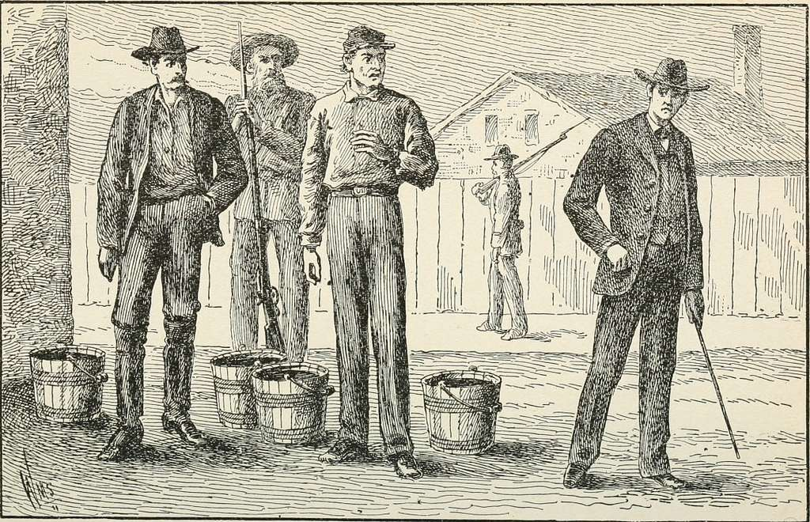
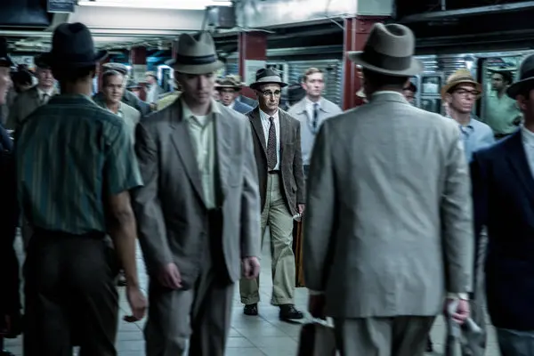
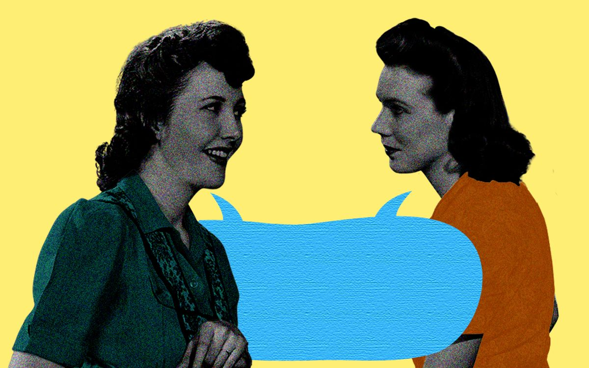
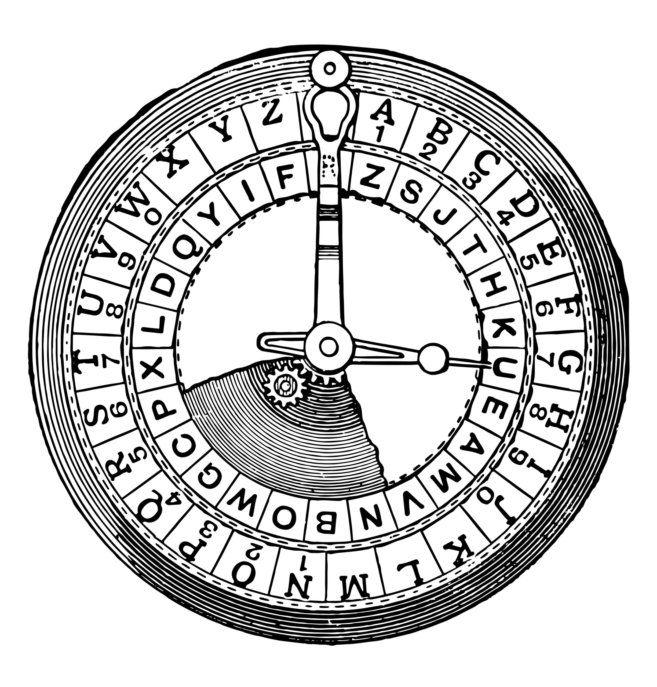
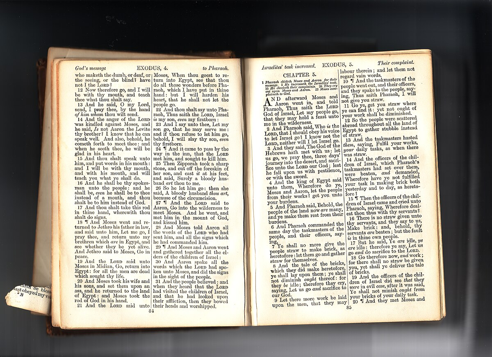
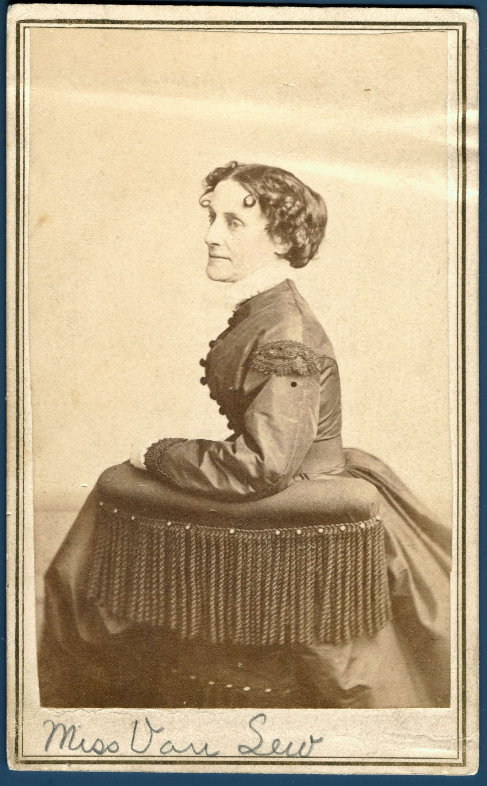
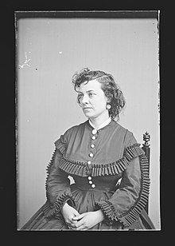
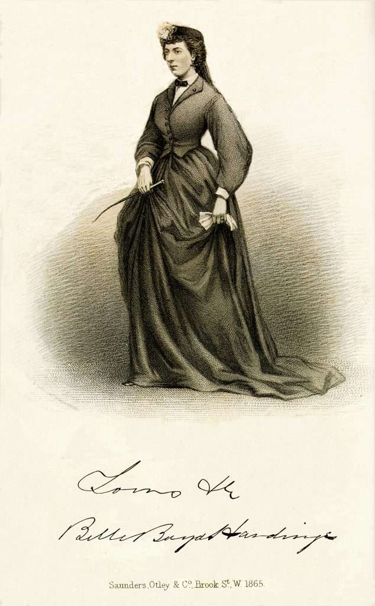

An Un-Essay Project
Welcome to the Civil War Spy's Survival Guide, a resource designed to help operatives working behind enemy lines during the American Civil War. Drawing on both Union and Confederate perspectives, this guide highlights essential espionage techniques, from disguises to secret codes, as well as best practices for survival.

The Civil War (1861–1865) turned friend against friend and neighbor against neighbor. Spies had to operate carefully across divided states, sifting through rumors, forging secret alliances, and sharing intelligence that could change the tide of battle. Espionage took many forms, some spies hid in plain sight as traveling salesmen, while others performed coded letter exchanges or telegraph intercepts.1
Spying in the Civil War was extremely dangerous. Captured spies could be executed, imprisoned, or used as bargaining chips for prisoner exchanges. With no formal intelligence agencies like today's CIA, these early spies often relied on personal networks, clandestine safe houses, and improvised disguises to avoid detection.

Dress the Part: Clothing is your first line of defense. Wear local styles to blend in.

Adopt Local Speech Patterns: Subtle dialect differences can be a giveaway.
Social Cues: Observe local norms and carry props that match your cover story (e.g., traveling merchant).
Pro-Tip: Women spies often found it easier to cross picket lines due to assumptions of the era. For example, Union spy Pauline Cushman leveraged her theatrical background to gather information.2
Networking: Loyal shopkeepers, barmaids, or farmhands can overhear crucial intel.
Observation: Pay attention to the comings and goings of supply wagons or troop trains.
Listening Posts: Cafés or taverns near garrisons are prime spots to overhear soldiers.
Record details on troop movements, leadership changes, or supply routes, and send them back via coded letters or trusted couriers.

Simple Substitution Ciphers: Replace each letter with a different letter or symbol.

Book Codes: Common texts like the Bible used as reference for page/line/word numbers.
Invisible Ink: Lemon juice or mild acids to write between lines, revealed by heat.
Communication was a major hurdle. Written letters could be intercepted, making coded messages vital.
Blend In: Keep your actions natural, belongings minimal, and backstory consistent.
Safe Houses: Know sympathetic locals or secluded spots for emergency hiding.
Travel Light: Avoid carrying incriminating documents or identifiable uniform items.

Elizabeth Van Lew (Union): A Richmond socialite who ran a major spy ring beneath Confederate noses by enlisting a network of informants.3

Pauline Cushman (Union): An actress turned spy, she feigned Confederate support while relaying vital intelligence to the North.2

Belle Boyd (Confederate): Dubbed the "Cleopatra of the Secession," she used her charm to extract secrets from Union officers.
Civil War espionage demanded creativity, courage, and adaptability. Whether you're slipping across enemy lines as a merchant or organizing networks in an occupied city, keep your wits about you. The intelligence you gather may well change the course of history, and save your life.